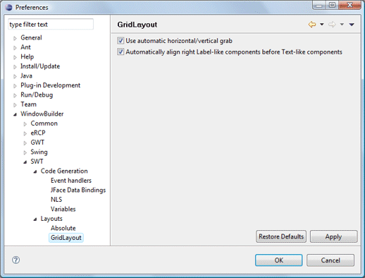
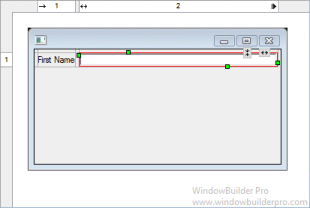
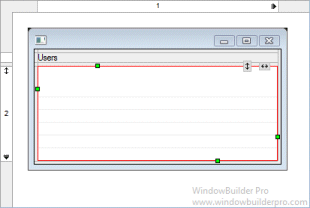
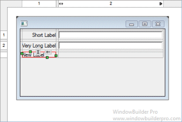
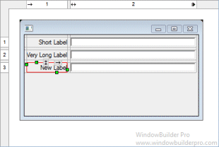

|  This page is used to control various SWT > Layouts > GridLayout options. Use automatic horizontal/vertical grabThis preference controls whether new text-oriented widgets (Text, Combo, etc.) are set to grab horizontally when they are added to the window and whether new Table and Tree widgets are set to grab horizontally and vertically when they are added to the window.   Automatically align right Label-like components before Text componentsThis preference controls whether Labels should be right aligned when they are to the left of a Text or Combo widget.   |